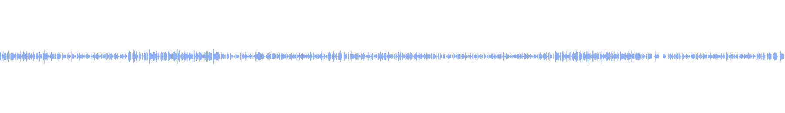

01
单词
一张卡，四步走
-
01
先看形状
abandonNO. 0128 / 1554
-
02
再听发音
US /əˈbændən/UK /əˈbænd(ə)n/
-
03
对一遍释义
v 丢弃；放弃，抛弃核心词 · 四级
-
04
放进句子里
How could she abandon her own child?她怎么能抛弃自己的孩子？
1554 个四级核心词、2298 个六级核心词，按这个顺序过一遍，认识的划掉，不熟的留下。 去背 →
02
听力
2025.06 四级 · 14:54

22 段原声 · 4 段已离线
去听
真题
2013—2026 按考次排开，原卷、答案、听力都在，点开就是 PDF。
04练习
词义、音标、短语、拼写，题干从真实词条现出，答错自动进错词本。
05作文
词数、段落、连接、拼写、句长，逐条批注，不给范文也不假装 AI。